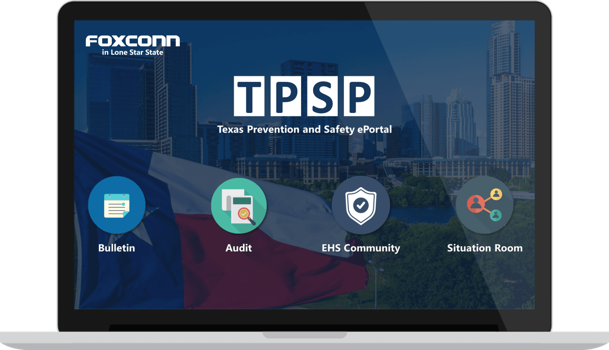

A Texas Foxconn internal ePortal shares the latest information on COVID-19 prevention and safety.

Challenges
The pandemic has already had a significant impact on business operations since early 2020, with production and supply chain services being disrupted or suspended due to worker shortages and government policies related to business lockdowns. To minimize the impact on business, it is crucial to closely monitor the latest pandemic news, implement relevant prevention measures, and have updated risk response plans across all working facilities.
Foxconn's headquarter has announced a program to monitor the COVID-19 situation across all global sites, and each regional group has a commander to oversee local offices and facilities. A VP has been appointed as the commander to monitor all sites in Texas and report to the HQ weekly. A Task Force Team (TFT) has been organized to execute the COVID-related responses to support the VP. The challenge remains to execute the response plan efficiently without overburdening the TFT members or investing significant additional resources during times of uncertainty.
The problem at hand is how to efficiently execute the COVID-related response plan for Foxconn sites in Texas without increasing the workload of the TFT members or investing significant additional resources during times of uncertainty caused by COVID-19.
Objectives
With limited internal manpower available, a digital platform could be a powerful tool for sharing information, collecting data, and creating reports with restrictions in physical interactions. The TFT decided to create an online platform to support the team to achieve required tasks and monitor employees’ safety.
After successfully completion of the platform, it is expected to offer the following benefits and functions:
- It will be effective for providing the latest and accurate local news and policies.
- It will increase the effectiveness and efficiency of collecting required data and generating weekly reports.
- It will include a simple document management system, allowing users to view, upload, edit, and delete internal confidential documents.
- It will provide secure online meeting rooms, enabling those who need to communicate and collaborate remotely while maintaining confidentiality.
- It will have administrative sections to manage different levels of permission for account users and handle account information.
Proposed System
The proposed system is named Texas Prevention and Safety Portal (TPSP), a Foxconn internal website to support TFT projects. The system will have the following functionalities
- Bulletin - a bulletin board for the latest COVID-19 information and local news.
- It will enable users to view available information and posts.
- It will allow TFT members to add, update, and delete contents from the database.
- Audit - a self-audit system to report COVID-19 prevention checklists weekly for each zone across all Texas sites.
- It will allow permitted users to fill out surveys and submit results.
- It will enable permitted users to view results and history data.
- It will allow TFT members to download and analyze raw data.
- EHS Community - a library to share EHS-related documents.
- It will allow permitted users to view, add, update, and delete documents by different levels
- Situation Room - an online conference room for internal commanders to communicate confidential topics.
- It will allow users to join online meetings and operate live video calls.
- It will enable users to view available information and posts.
- It will allow TFT members to add, update, and delete contents from the database.
- It will allow permitted users to fill out surveys and submit results.
- It will enable permitted users to view results and history data.
- It will allow TFT members to download and analyze raw data.
- It will allow permitted users to view, add, update, and delete documents by different levels
- It will allow users to join online meetings and operate live video calls.